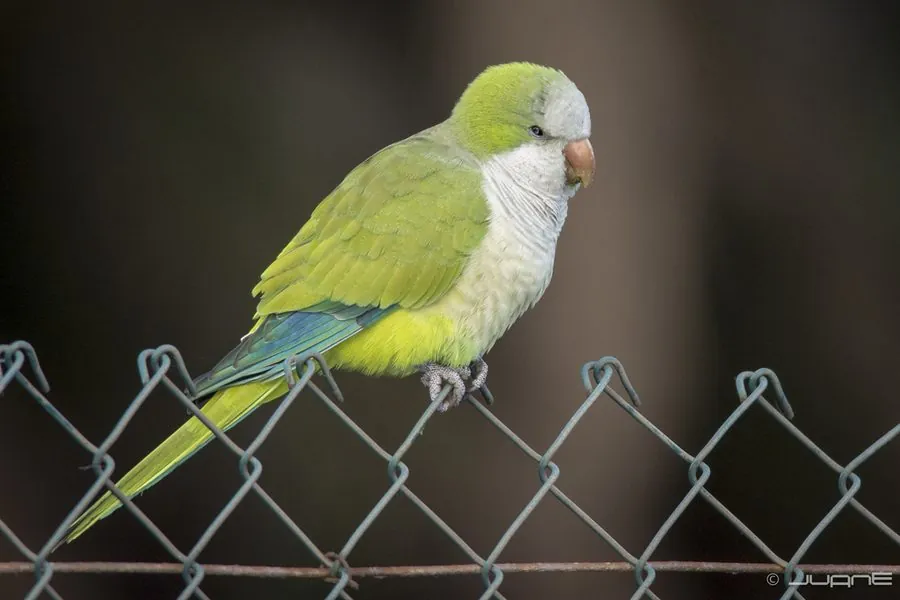

鸟类 · 动物界
和尚鹦鹉 Myiopsitta monachus

南美小型鹦鹉，通体绿色、额部灰色、飞羽蓝色。它是少数会用树枝编织公共巢的鹦鹉，常在城市电线杆上筑起巨大巢团。
- 分类
- 门脊索动物门纲鸟纲目鹦形目科鹦鹉科属和尚鹦鹉属
- 栖息环境
- 南美稀树草原、灌丛、河岸林、棕榈林与城镇绿地，常在电线杆和建筑上筑巢。
- 地理分布
- 原产南美洲中南部（巴西、阿根廷、乌拉圭、巴拉圭）；被引入北美、欧洲、日本等地并野化。
- 保护级别
- IUCN 红色名录列为无危（LC）；列入 CITES 附录二，国际贸易受许可管理。
物种志
和尚鹦鹉体长约二十八至三十厘米，体重九十至一百二十克。通体草绿色，前额与头顶灰褐色，喉部和胸部具淡灰色横纹，飞羽深蓝色，尾羽长而尖。虹膜深褐，嘴淡黄色，脚灰色。雌雄外形相似。它的喙较尖，适合咬开种子，也能灵活攀爬。
和尚鹦鹉原产于南美洲中南部，栖息于稀树草原、灌丛、河岸林与城镇绿地，常成数十只的群体活动。它最独特之处是用带刺的树枝编织球状巢，多个巢室可连成巨大巢团，附着在树杈、电线杆或建筑物上，是少数会真正“盖房子”的鹦鹉之一。繁殖期每窝产卵五至八枚，孵化和育雏由雌雄共同参与。由于宠物贸易和放生，它已在美国、欧洲、日本等地的城市建立野化种群，适应力极强，被列入 CITES 附录二。
形态与习性
- 体长28–30 厘米
- 体重90–120 克
- 食性种子、果实、花芽与谷物
- 繁殖树枝编织的公共巢，每窝 5–8 枚
- 习性群居，常在城市电线杆筑巢
- 保护级别IUCN 无危；CITES 附录二
趣味知识
- 会用带刺树枝编织球状巢，多个家庭共用一个大巢团。
- 是少数能在城市电线杆上安家的鹦鹉。
- 叫声响亮嘈杂，群栖时整条街都能听见。